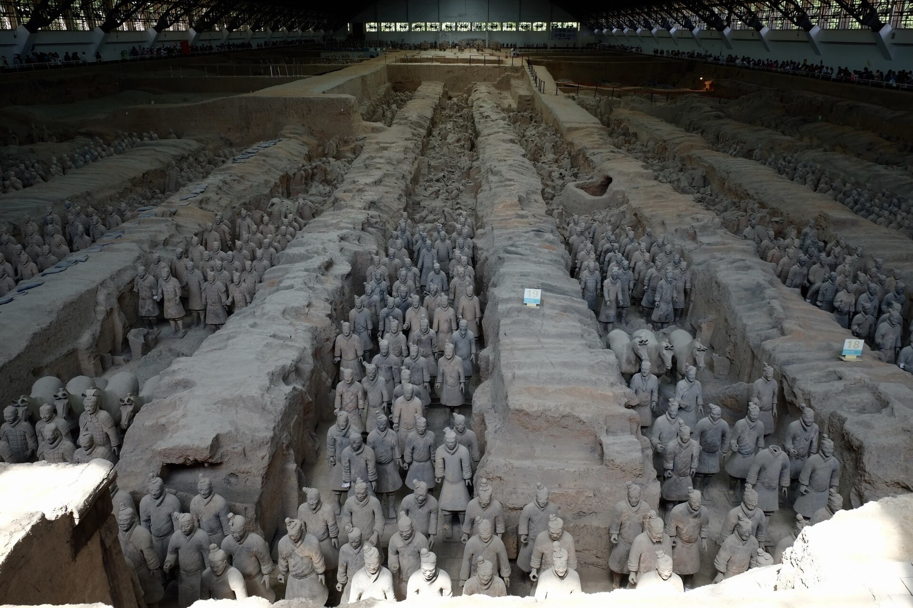
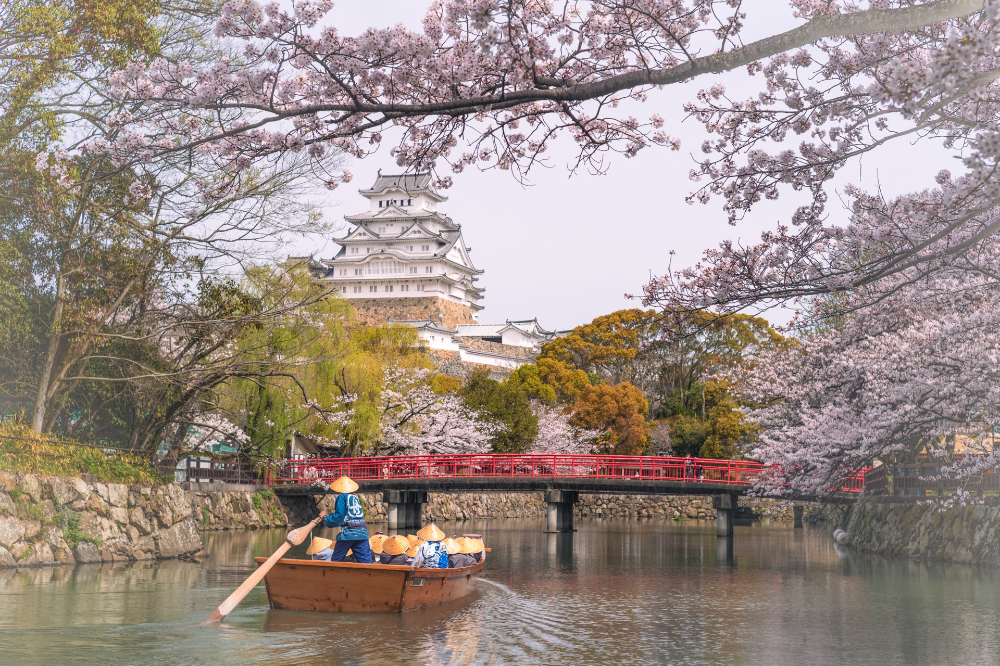
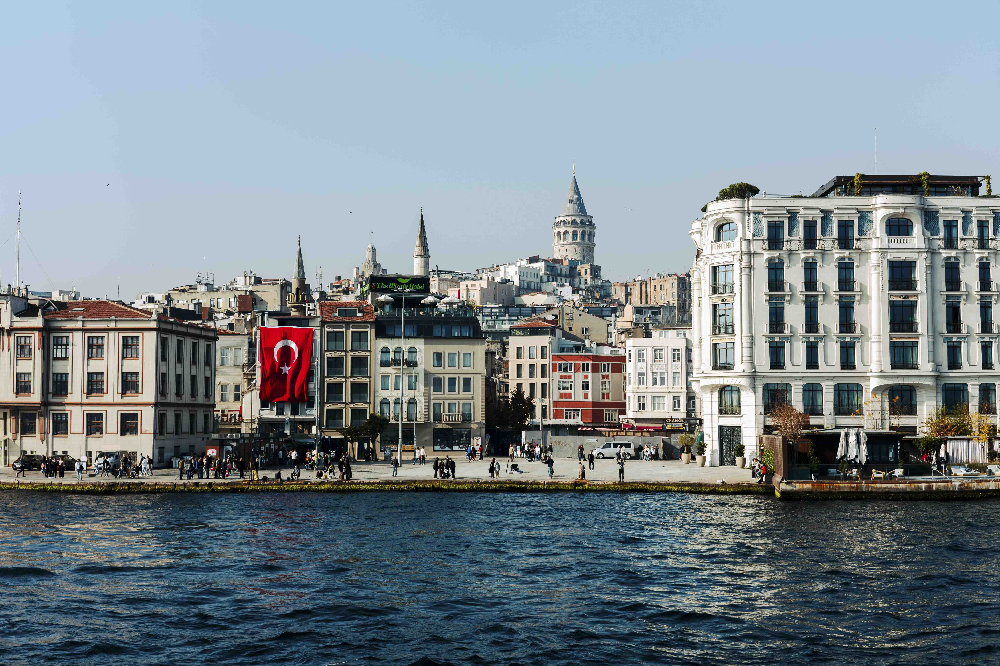
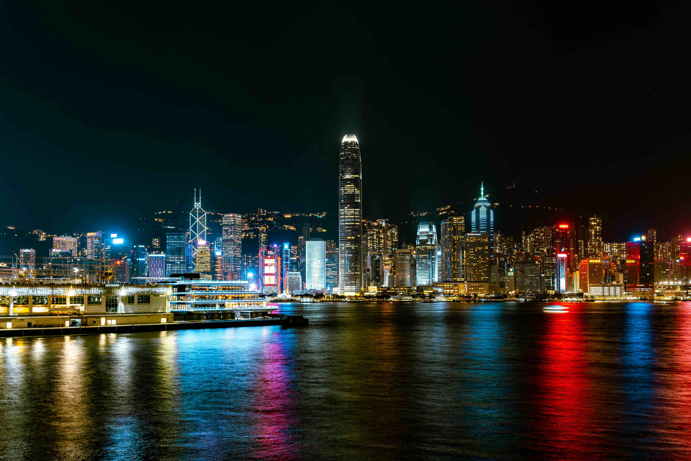

ライカやドローンを片手に、世界各地で切り取った瞬間たち。街角の何気ない風景から、雄大な自然まで、旅先で出会った光景を写真と動画で記録しています。
カッパドキアのホテルから
妻と訪れたカッパドキアのホテルから眺めた朝の風景。静寂の中に響く鳥のさえずりと、徐々に明るくなる空が印象的でした。
記憶すべき風景、馬草壟（Ma Tso Lung）
香港の隠れた絶景スポット、馬草壟。都市の喧騒から離れた静かな湿地帯で、野鳥の声に耳を澄ませながら撮影しました。
Silent Waltz of the Gondolas
朝靄に包まれたヴェネツィアの運河。観光客で賑わう前の静寂な時間に、ゴンドラが静かに水面を滑っていく様子を捉えました。

永遠の守護者たち
西安の兵馬俑博物館で、2000年以上の時を経ても変わらずに並び続ける兵士たちの姿に圧倒されました。歴史の重みを感じる瞬間でした。

桜に抱かれる白鷺城
満開の桜に包まれた姫路城。日本の美しさを象徴するような光景を、Leicaで丁寧に撮影しました。白い城壁と薄紅色の桜のコントラストが印象的でした。

ボスポラス海峡の朝
ヨーロッパとアジアを結ぶボスポラス海峡から見たイスタンブールの街並み。オスマン帝国の歴史を感じる建物群が朝日に照らされる瞬間です。

百万ドルの夜景
香港のヴィクトリア・ハーバーから見た摩天楼の夜景。無数の光が水面に反射し、まさに「百万ドルの夜景」と呼ばれる美しさでした。